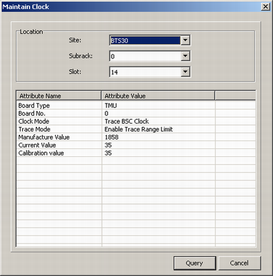
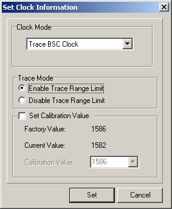

This describes how to query and set clock parameters, such as clock mode, trace mode, current value, and calibration value.
Prerequisites
- The LMT runs normally.
- The communication between the LMT and the BSC is normal.
- The communication between the BSC and the BTS is normal.
Context
The clock mode of the BTS consists of Internal Clock, External Sync. Clock, IP Clock, Trace BSC Clock, and Trace GPS Clock. The trace mode consists of Enable Trace Range Limit and Disable Trace Range Limit.
Procedure
- Through GUI
- Querying the clock
- Choose .
- Set parameters in the Location area, and then click Query. The query results are displayed, as shown in Figure 1.
Figure 1 Querying the clock

- Click Cancel to end the query.
- Setting the Clock
- In Figure 1, right-click in the result area, and then choose Set Clock from the shortcut menu. A dialog box is displayed, as shown in Figure 2.
Figure 2 Setting the clock

- Set Clock Mode and Trace Mode. You can also set Calibration Value.
- Click Set.
- Saving the Clock
- In Figure 1, right-click in the result area, and then choose Save Clock. A dialog box is displayed, requesting you to check whether the current clock is correct.
- Click Yes. The current clock is saved.
- Through MML
- You can run the following commands on the LMT to maintain the BTS clock.
- Run the LST BTSCLK command to query the BTS clock mode.
- Run the DSP BTSCLK command to query the mode of tracing the BTS clock mode.
- Run the MOD BTSCLK command to modify the BTS clock mode.
- Run the SET BTSCLKPARA command to set the BTS clock mode.
- Run the SET BTSCLKPARA command to save the parameters related to the BTS clock mode.
Copyright © Huawei Technologies Co., Ltd.